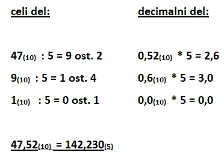
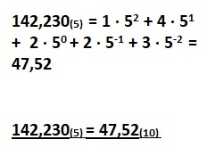

Vsakodnevne številke so zapisane v desetiškem številskem sestavu.
Sestavo števila si lahko prestavljamo tako : 5312(10) = 5 · 1000 + 3 · 100 + 1 · 10 + 2 · 1;
Pretvorba v poljubno osnovo pa je sledeča:
CELA ŠTEVILA
PRIMER: (pretvarjamo iz (10) v (7)) ~ število 1254(10) želimo pretvoriti v sedmiški številski sestav p= 7 ~
POSTOPEK:
Začetno število delimo z osnovo številskega sestava, v katerega želimo število pretvorit. Kvocient, ki ga dobimo pri deljenju, delimo naprej, ostanek si shranjujemo za konec. Ko pri celoštevilskem deljenju dobimo rezultat 0, je postopek zaključen. Ostanke prepišemo od zadnjega do prvega in tako dobilo število v novem številskem sestavu.
OBRATNI PRIMER: (pretvarjamo iz (7) v (10)) ~ število 3441(7) želimo pretvoriti v desetiški številski sestav ~
POSTOPEK:
Število v poljubnem p številskem sestavu pretvorimo v desetiško tako, da ga napišemo kot vsoto produktov števk števila in potence osnove sestava. Eksponent se začne z n-1, pri tem je n kar število števk števila iz katerega pretvarjamo, za vsako naslednji produkt pa se ta zmanjša (torej eksponenti: n-1 , n-2 , … , 0).
DECIMALNA ŠTEVILA
Tako se pretvarja cela števila. Seveda pa lahko pride do pretvorbe decimalnih števil. Postopek je sličen.
PRIMER: (pretvarjamo iz (10) v (5)) ~ število 47,52(10) želimo pretvoriti v petiški številski sestav ~

POSTOPEK:
Decimalnemu številu najprej pretvorimo celi del, kot smo to počeli pri celih številih, kasneje pretvarjamo kar je za decimalno vejico. Decimalni del množimo z osnovo, mu odbijemo celi del in tako množimo naprej kar je za vejico. Ko pridemo do 0,0 ali pa množimo tolikokrat, kolikor mest potrebujemo, prepišemo cele vrednosti produktov po vrstnem redu od prve do zadnje za celim delom, ki smo ga že pretvorili.
OBRATNI PRIMER: (pretvarjamo iz (5) v (10)) ~ število 142,23(5) želimo pretvoriti v desetiški številski sestav ~

POSTOPEK:
Decimalno število v poljubnem p številskem sestavu pretvorimo v desetiško tako, da ga napišemo kot vsoto produktov števk števila in potence osnove sestava. Eksponent se začne z n-1, pri tem je n kar število števk celega dela, za vsako naslednji produkt pa se ta zmanjša (torej eksponenti: n-1 , n-2 , … , 0, -1,…).
Posebnost! Pri višjih sestavih (npr. (20)) se lahko srečamo s števili večjimi od 9. Zapisujemo jih tako:
A = 10 B = 11 C = 12 D = 13 E = 14…